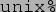

This document consists of example programs which introduce different aspects of GUI. This is what you will need to do to compile and run the examples:
Make a copy of the examples directory. Source code and shared objects are provided.
(kym**** Note - shared objects not made yet, but there is a makefile)

In order to run the examples use

If you want to recompile the examples use
The user interface consists of two parts:
If one of these examples is run with no preference given on the command line for a GUI toolkit then application will look to find a suitable GUI toolkit that is registered. If more than one GUI toolkit is registered then one will be selected at random. If you wish to specify a GUI toolkit (for example Foo) then you will need to add -factory=Foo to the end of the command line or set the variable vgui to Foo.